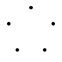

Welcome! I'm Frank, explore my work
and get in touch!

Garnish your Widgets
Flexible, Dynamic and Type-Safe Composition in Rust using a flat decorator pattern.

Welcome! I'm Frank, explore my work
and get in touch!
Flexible, Dynamic and Type-Safe Composition in Rust using a flat decorator pattern.